Sqlg is a implementation of Apache TinkerPop on a RDBMS. Currently Postgresql, HSQLDB, and H2 database are supported.
Introduction
Sqlg primary challenge is to reduce latency by combining TinkerPop steps into as few as possible database calls. The fine grained nature of graph traversals makes this crucial else the remote call latency has a severe performance impact.
Additionally for Postgresql Sqlg supports various bulk modes to reduce latency when modifying the graph.
|
Note
|
Hsqldb and H2 do not suffer the same latency as Postgresql as it runs embedded in the jvm. |
TinkerPop supported features
Sqlg version 1.3.3 runs on TinkerPop 3.2.3
Sqlg passes TinkerPop’s StructureStandardSuite and ProcessStandardSuite test suites.
-
Computer
-
ThreadedTransactions
-
Variables
-
MultiProperties
-
MetaProperties
-
UserSuppliedIds
-
NumericIds
-
StringIds
-
UuidIds
-
CustomIds
-
AnyIds
-
UserSuppliedIds
-
NumericIds
-
StringIds
-
UuidIds
-
CustomIds
-
AnyIds
-
AddProperty
-
RemoveProperty
-
UserSuppliedIds
-
NumericIds
-
StringIds
-
UuidIds
-
CustomIds
-
AnyIds
-
MapValues
-
MixedListValues
-
SerializableValues
-
UniformListValues
-
MapValues
-
MixedListValues
-
SerializableValues
-
UniformListValues
Getting Started
Maven coordinates
<dependency>
<groupId>org.umlg</groupId>
<artifactId>sqlg-postgres</artifactId>
<version>1.3.3</version>
</dependency>
<dependency>
<groupId>org.umlg</groupId>
<artifactId>sqlg-hsqldb</artifactId>
<version>1.3.3</version>
</dependency>
<dependency>
<groupId>org.umlg</groupId>
<artifactId>sqlg-h2</artifactId>
<version>1.3.3</version>
</dependency>
This will include gremlin-groovy. If you have no need for that then use the following coordinates.
<dependency>
<groupId>org.umlg</groupId>
<artifactId>sqlg-postgres-dialect</artifactId>
<version>1.3.3</version>
</dependency>
<dependency>
<groupId>org.umlg</groupId>
<artifactId>sqlg-hsqldb-dialect</artifactId>
<version>1.3.3</version>
</dependency>
<dependency>
<groupId>org.umlg</groupId>
<artifactId>sqlg-h2-dialect</artifactId>
<version>1.3.3</version>
</dependency>
Start
SqlgGraph is a singleton that can be shared among multiple threads. You instantiate SqlgGraph using the standard
TinkerPop static constructors.
-
Graph g = SqlgGraph.open(final Configuration configuration) -
Graph g = SqlgGraph.open(final String pathToSqlgProperties)
The configuration object requires the following properties.
jdbc.url=jdbc:postgresql://localhost:5432/yourdb jdbc.username=postgres jdbc.password=******
jdbc.url=jdbc:hsqldb:file:/tmp/yourdb jdbc.username=SA jdbc.password=
jdbc.url=jdbc:h2:file:target/tmp/yourdb jdbc.username=SA jdbc.password=
In the case of Postgresql the database must already exist.
Once you have access to the graph you can use it as per normal.
@Test
public void useAsPerNormal() {
Vertex person = this.sqlgGraph.addVertex(T.label, "Person", "name", "John");
Vertex address = this.sqlgGraph.addVertex(T.label, "Address", "street", "13th");
person.addEdge("livesAt", address, "since", LocalDate.of(2010, 1, 21));
this.sqlgGraph.tx().commit(); (1)
List<Vertex> addresses = this.sqlgGraph.traversal().V().hasLabel("Person").out("livesAt").toList();
assertEquals(1, addresses.size());
}-
It is very important to always commit or rollback the transaction. If you do not connections to the database will remain open and eventually the connection pool with run out of connections.
Gremlin Console
[pieter@pieter-laptop bin]$ ./gremlin.sh
\,,,/
(o o)
-----oOOo-(3)-oOOo-----
plugin activated: tinkerpop.server
plugin activated: tinkerpop.utilities
plugin activated: tinkerpop.tinkergraph
gremlin> :install org.umlg sqlg-postgres 1.3.3
log4j:WARN No appenders could be found for logger (org.apache.tinkerpop.gremlin.groovy.util.DependencyGrabber).
log4j:WARN Please initialize the log4j system properly.
log4j:WARN See http://logging.apache.org/log4j/1.2/faq.html#noconfig for more info.
==>Loaded: [org.umlg, sqlg-postgres, 1.3.3]
gremlin> :plugin list
==>tinkerpop.server[active]
==>tinkerpop.gephi
==>tinkerpop.utilities[active]
==>tinkerpop.sugar
==>tinkerpop.credentials
==>tinkerpop.tinkergraph[active]
==>sqlg.postgres
gremlin> :plugin use sqlg.postgres
==>sqlg.postgres activated
gremlin> graph = SqlgGraph.open('pathTo/sqlg.properties')
==>sqlggraph[SqlGraph]
gremlin> g = graph.traversal()
==>sqlggraphtraversalsource[sqlggraph[SqlGraph] (jdbc:postgresql://localhost:5432/sqlgraphdb), standard]
gremlin> graph.io(graphml()).readGraph('pathTo/grateful-dead.xml')
==>null
gremlin> g.V().count()
==>808
gremlin>
[pieter@pieter-laptop bin]$ ./gremlin.sh
\,,,/
(o o)
-----oOOo-(3)-oOOo-----
plugin activated: tinkerpop.server
plugin activated: tinkerpop.utilities
plugin activated: tinkerpop.tinkergraph
gremlin> :install org.umlg sqlg-hsqldb 1.3.3
log4j:WARN No appenders could be found for logger (org.apache.tinkerpop.gremlin.groovy.util.DependencyGrabber).
log4j:WARN Please initialize the log4j system properly.
log4j:WARN See http://logging.apache.org/log4j/1.2/faq.html#noconfig for more info.
==>Loaded: [org.umlg, sqlg-hsqldb, 1.3.3]
gremlin> :plugin list
==>tinkerpop.server[active]
==>tinkerpop.gephi
==>tinkerpop.utilities[active]
==>tinkerpop.sugar
==>tinkerpop.credentials
==>tinkerpop.tinkergraph[active]
==>sqlg.hsqldb
gremlin> :plugin use sqlg.hsqldb
==>sqlg.hsqldb activated
gremlin> graph = SqlgGraph.open('pathTo/sqlg.properties')
==>sqlggraph[SqlGraph]
gremlin> g = graph.traversal()
==>sqlggraphtraversalsource[sqlggraph[SqlGraph] (jdbc:hsqldb:file:src/test/db/sqlgraphdb), standard]
gremlin> graph.io(graphml()).readGraph('pathTo/grateful-dead.xml')
==>null
gremlin> g.V().count()
==>808
gremlin>
Data types
| Java | Postgresql | HSQLDB | H2 |
|---|---|---|---|
Boolean |
BOOLEAN |
BOOLEAN |
BOOLEAN |
Byte |
Not supported |
TINYINT |
TINYINT |
Short |
SMALLINT |
SMALLINT |
SMALLINT |
Integer |
INTEGER |
INTEGER |
INT |
Long |
BIGINT |
BIGINT |
BIGINT |
Float |
REAL |
Not supported |
REAL |
Double |
DOUBLE PRECISION |
DOUBLE |
DOUBLE |
String |
TEXT |
LONGVARCHAR |
VARCHAR |
Boolean[] |
BOOLEAN[] |
BOOLEAN ARRAY DEFAULT ARRAY[] |
ARRAY |
Byte[] |
BYTEA |
LONGVARBINARY |
BINARY |
Short[] |
SMALLINT[] |
SMALLINT ARRAY DEFAULT ARRAY[] |
ARRAY |
Integer[] |
INTEGER[] |
INTEGER ARRAY DEFAULT ARRAY[] |
ARRAY |
Long[] |
BIGINT[] |
BIGINT ARRAY DEFAULT ARRAY[] |
ARRAY |
Float[] |
REAL[] |
Not supported |
ARRAY |
Double[] |
DOUBLE PRECISION[] |
DOUBLE ARRAY DEFAULT ARRAY[] |
ARRAY |
String[] |
TEXT[] |
LONGVARCHAR ARRAY DEFAULT ARRAY[] |
ARRAY |
java.time.LocalDateTime |
TIMESTAMP WITH TIME ZONE |
TIMESTAMP WITH TIME ZONE |
TIMESTAMP |
java.time.LocalDate |
DATE |
DATE |
DATE |
java.time.LocalTime |
TIME WITH TIME ZONE |
TIME WITH TIME ZONE |
TIME |
java.time.ZonedDateTime |
TIMESTAMP WITH TIME ZONE, TEXT |
TIMESTAMP WITH TIME ZONE, LONGVARCHAR |
TIMESTAMP, VARCHAR |
java.time.Period |
INTEGER, INTEGER, INTEGER |
INTEGER, INTEGER, INTEGER |
INT, INT, INT |
java.time.Duration |
BIGINT, INTEGER |
BIGINT, INTEGER |
BIGINT, INT |
java.time.LocalDateTime[] |
TIMESTAMP WITH TIME ZONE[] |
TIMESTAMP WITH TIME ZONE ARRAY DEFAULT ARRAY[] |
ARRAY |
java.time.LocalDate[] |
DATE[] |
DATE ARRAY DEFAULT ARRAY[] |
ARRAY |
java.time.LocalTime[] |
TIME WITH TIME ZONE ARRAY DEFAULT ARRAY[] |
TIME WITH TIME ZONE[] |
ARRAY |
java.time.ZonedDateTime[] |
TIMESTAMP WITH TIME ZONE[], TEXT[] |
TIMESTAMP WITH TIME ZONE ARRAY DEFAULT ARRAY[], LONGVARCHAR ARRAY DEFAULT ARRAY[] |
ARRAY |
java.time.Period[] |
INTEGER[], INTEGER[], INTEGER[] |
INTEGER ARRAY DEFAULT ARRAY[], INTEGER ARRAY DEFAULT ARRAY[], INTEGER ARRAY DEFAULT ARRAY[] |
ARRAY |
java.time.Duration[] |
BIGINT[], INTEGER[] |
BIGINT ARRAY DEFAULT ARRAY[], INTEGER ARRAY DEFAULT ARRAY[] |
ARRAY |
com.fasterxml.jackson.databind.JsonNode |
JSONB |
Not supported |
Not supported |
com.fasterxml.jackson.databind.JsonNode[] |
JSONB[] |
Not supported |
Not supported |
org.postgis.Point |
geometry(POINT) |
Not supported |
Not supported |
org.umlg.sqlg.gis.GeographyPoint |
geography(POINT, 4326) |
Not supported |
Not supported |
org.postgis.LineString |
geometry(LINESTRING) |
Not supported |
Not supported |
org.postgis.Polygon |
geometry(POLYGON) |
Not supported |
Not supported |
org.umlg.sqlg.gis.GeographyPolygon |
geography(POLYGON, 4326) |
Not supported |
Not supported |
|
Note
|
java.time.LocalTime drops the nano second precision.
|
Architecture
With the coming of vertex labels to TinkerPop the mapping of TinkerPop’s graph semantics to that of a RDBMS became natural and useful.
Vertex tables
Every unique vertex label maps to a table. Vertex tables are prefixed with a V_. i.e. V_Person. The vertex table
stores the vertex’s properties.
Edge tables
Every unique edge label maps to a table. Edge tables are prefixed with a E_. i.e. E_friend. The edge table stores
each edge’s adjacent vertex ids and the edge properties. The column corresponding to each adjacent vertex id (IN and OUT)
has a foreign key to the adjacent vertex’s table. The foreign key is optional, instead just an index on the adjacent vertex id
can be used.
From a rdbms' perspective each edge table is the classic many to many join table between vertices.
TinkerPop-modern
Taken from TinkerPop
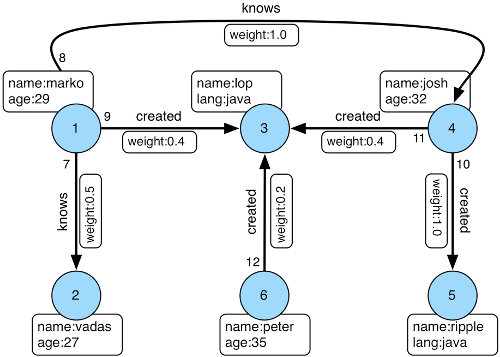
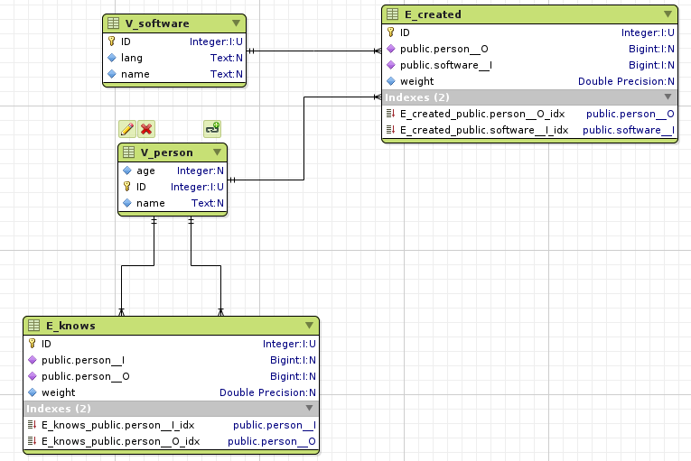
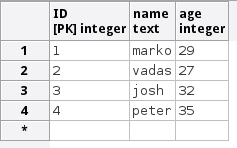
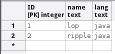
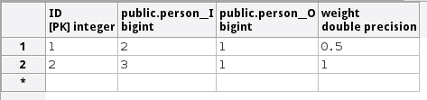
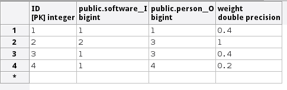
Namespacing and Schemas
Many RDBMS databases have the notion of a schema as a namespace for tables. Sqlg supports schemas
for vertex labels. Distinct schemas for edge tables are unnecessary as edge tables are created in the schema of the adjacent out vertex.
By default schemas for vertex tables go into the underlying databases' default schema. For Postgresql, hsqldb and H2 this
is the public schema.
To specify the schema for a label Sqlg uses the dot . notation.
@Test
public void testElementsInSchema() {
Vertex john = this.sqlgGraph.addVertex(T.label, "Manager", "name", "john"); (1)
Vertex palace1 = this.sqlgGraph.addVertex(T.label, "continent.House", "name", "palace1"); (2)
Vertex corrola = this.sqlgGraph.addVertex(T.label, "fleet.Car", "model", "corrola"); (3)
palace1.addEdge("managedBy", john);
corrola.addEdge("owner", john);
this.sqlgGraph.tx().commit();
assertEquals(1, this.sqlgGraph.traversal().V().hasLabel("Manager").count().next().intValue()); (4)
assertEquals(0, this.sqlgGraph.traversal().V().hasLabel("House").count().next().intValue()); (5)
assertEquals(1, this.sqlgGraph.traversal().V().hasLabel("continent.House").count().next().intValue()); (6)
assertEquals(0, this.sqlgGraph.traversal().V().hasLabel("Car").count().next().intValue());
assertEquals(1, this.sqlgGraph.traversal().V().hasLabel("fleet.Car").count().next().intValue());
assertEquals(1, this.sqlgGraph.traversal().E().hasLabel("managedBy").count().next().intValue());
assertEquals(1, this.sqlgGraph.traversal().E().hasLabel("owner").count().next().intValue());
}-
Manager will be in the default public schema.
-
House will be in the continent schema.
-
Car will be in the fleet schema.
-
Vertices in the public schema do not need to be qualified with the schema.
-
Vertices not in the public schema must be qualified with its schema. In this case House will not be found.
-
As House is qualified with the continent schema it will be found.
Table V_manager is in the public (default) schema.
Table V_house is in the continent schema.
Table V_car is in the fleet schema.
Table E_managedBy is in the continent schema as its out vertex palace1 is in the continent schema.
Table E_owner is in the fleet schema as its out vertex is in the `fleet`schema.
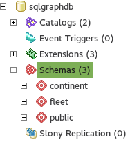 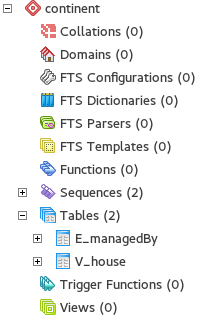 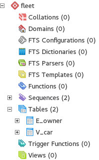 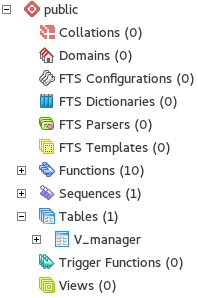
Edge label
An edge label can have many different out vertex labels. This means that its possible for a single edge label to be stored in multiple schemas and tables. One for each distinct out vertex label. Gremlin queries will work as per normal. However it is possible to target the edges per out vertex schema directly.
@Test
public void testEdgeAcrossSchema() {
Vertex a = this.sqlgGraph.addVertex(T.label, "A.A");
Vertex b = this.sqlgGraph.addVertex(T.label, "B.B");
Vertex c = this.sqlgGraph.addVertex(T.label, "C.C");
a.addEdge("specialEdge", b);
b.addEdge("specialEdge", c);
this.sqlgGraph.tx().commit();
assertEquals(2, this.sqlgGraph.traversal().E().hasLabel("specialEdge").count().next().intValue()); (1)
assertEquals(1, this.sqlgGraph.traversal().E().hasLabel("A.specialEdge").count().next().intValue()); (2)
assertEquals(1, this.sqlgGraph.traversal().E().hasLabel("B.specialEdge").count().next().intValue()); (3)
}-
Query specialEdge
-
Query specialEdge with, out vertex labels in the A schema.
-
Query specialEdge with, out vertex labels in the B schema.
Topology
Sqlg stores the graph’s topology information in the graph itself as a graph.
The topology is stored in the sqlg_schema schema.
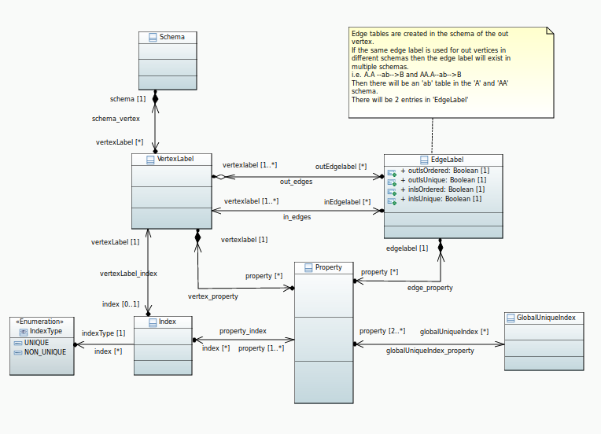
TinkerPop has no notion of schema or topology. However any TinkerPop graph has an implicit schema. Sqlg manages the schema as a first class construct.
Sqlg follows the normal TinkerPop semantics in that the schema does not need to be defined upfront.
Every graph modification first checks to see if the element’s schema (label,name) exists.
If not, it will create the element’s schema. For Postgresql this works well as it supports transactional schema creation/modification.
|
Warning
|
Hsqldb and H2 database do not support transactional schema creation/modification. They will both silently commit the transaction and continue. This breaks the user’s transaction boundaries. For both Hsqldb and H2 it is recommended to create the schema upfront. |
It is possible to query and traverse the topology as a normal TinkerPop graph.
To query the topology the TopologyStrategy is used. To facilitate ease of use, SqlgGraph.topology() method is added to enable the strategy.
Being able to query the topology is helpful to understand a graph’s structure.
@Test
public void showTopologyTraversals() {
final GraphReader gryoReader = GryoReader.build().create(); (1)
try (final InputStream stream = AbstractGremlinTest.class.getResourceAsStream("/org/apache/tinkerpop/gremlin/structure/io/gryo/tinkerpop-modern.kryo")) {
gryoReader.readGraph(stream, this.sqlgGraph);
} catch (IOException e) {
Assert.fail(e.getMessage());
}
System.out.println("//All vertex labels");
sqlgGraph.topology().V()
.hasLabel(Topology.SQLG_SCHEMA + "." + Topology.SQLG_SCHEMA_VERTEX_LABEL) (2)
.forEachRemaining(
v -> System.out.println(v.<String>value(Topology.SQLG_SCHEMA_VERTEX_LABEL_NAME))
);
System.out.println("//All edge labels");
sqlgGraph.topology().V()
.hasLabel(Topology.SQLG_SCHEMA + "." + Topology.SQLG_SCHEMA_VERTEX_LABEL)
.out(Topology.SQLG_SCHEMA_OUT_EDGES_EDGE) (3)
.forEachRemaining(
v -> System.out.println(v.<String>value(Topology.SQLG_SCHEMA_EDGE_LABEL_NAME))
);
System.out.println("//'person' properties");
sqlgGraph.topology().V()
.hasLabel(Topology.SQLG_SCHEMA + "." + Topology.SQLG_SCHEMA_VERTEX_LABEL)
.has(Topology.SQLG_SCHEMA_VERTEX_LABEL_NAME, "person") (4)
.out(Topology.SQLG_SCHEMA_VERTEX_PROPERTIES_EDGE) (5)
.forEachRemaining(
v -> {
System.out.print(v.<String>value(Topology.SQLG_SCHEMA_PROPERTY_NAME) + " : ");
System.out.println(v.<String>value(Topology.SQLG_SCHEMA_PROPERTY_TYPE));
}
);
System.out.println("//'software' properties");
sqlgGraph.topology().V()
.hasLabel(Topology.SQLG_SCHEMA + "." + Topology.SQLG_SCHEMA_VERTEX_LABEL)
.has(Topology.SQLG_SCHEMA_VERTEX_LABEL_NAME, "software")
.out(Topology.SQLG_SCHEMA_VERTEX_PROPERTIES_EDGE)
.forEachRemaining(
v -> {
System.out.print(v.<String>value(Topology.SQLG_SCHEMA_PROPERTY_NAME) + " : ");
System.out.println(v.<String>value(Topology.SQLG_SCHEMA_PROPERTY_TYPE));
}
);
System.out.println("//'created' properties");
sqlgGraph.topology().V()
.hasLabel(Topology.SQLG_SCHEMA + "." + Topology.SQLG_SCHEMA_VERTEX_LABEL) (6)
.out(Topology.SQLG_SCHEMA_OUT_EDGES_EDGE) (7)
.has(Topology.SQLG_SCHEMA_EDGE_LABEL_NAME, "created") (8)
.out(Topology.SQLG_SCHEMA_EDGE_PROPERTIES_EDGE) (9)
.forEachRemaining(
v -> {
System.out.print(v.<String>value(Topology.SQLG_SCHEMA_PROPERTY_NAME) + " : ");
System.out.println(v.<String>value(Topology.SQLG_SCHEMA_PROPERTY_TYPE));
}
);
System.out.println("//'knows' properties");
sqlgGraph.topology().V()
.hasLabel(Topology.SQLG_SCHEMA + "." + Topology.SQLG_SCHEMA_VERTEX_LABEL)
.out(Topology.SQLG_SCHEMA_OUT_EDGES_EDGE)
.has(Topology.SQLG_SCHEMA_EDGE_LABEL_NAME, "knows")
.out(Topology.SQLG_SCHEMA_EDGE_PROPERTIES_EDGE)
.forEachRemaining(
v -> {
System.out.print(v.<String>value(Topology.SQLG_SCHEMA_PROPERTY_NAME) + " : ");
System.out.println(v.<String>value(Topology.SQLG_SCHEMA_PROPERTY_TYPE));
}
);
}-
Use TinkerPop’s i.o. infrastructure to load the modern graph.
-
Find all VertexLabels, they are in
sqlg_schema.vertex -
Traverse out on the
out_edgesedge to find all the edges. WARNING this may produce duplicates as a single edge label may have many different distinct out vertex labels. -
Find the
personvertex. -
Traverse out on the
vertex_propertyedge to find the person vertex labels properties. -
Find all vertex labels. i.e. vertices in
sqlg_schema.vertex -
Traverse the
out_edgesedge. -
Filter the out edges for only the created edges.
-
Traverse the
edge_propertiesedge to find the created edge’s properties.
//All vertex labels person software //All edge labels knows created //'person' properties name : STRING age : INTEGER //'software' properties name : STRING lang : STRING //'created' properties weight : DOUBLE //'knows' properties weight : DOUBLE
Topology eager creation
It is often useful to create the topology upfront. The topology creation api is accessed via the Topology object.
It is a singleton. Topology topology = sqlgGraph.getTopology();
To create new topology objects use the ensure methods. They will return the a topology object representing the specific
topology element. i.e. Schema, VertexLabel, EdgeLabel, PropertyColumn, Index or GlobalUniqueIndex
@Test
public void createModernTopology() {
Topology topology = this.sqlgGraph.getTopology(); (1)
VertexLabel personVertexLabel = topology.ensureVertexLabelExist("public", "person", new HashMap<String, PropertyType>() {{
put("name", PropertyType.STRING);
put("age", PropertyType.INTEGER);
}}); (2)
VertexLabel softwareVertexLabel = topology.ensureVertexLabelExist("public", "software", new HashMap<String, PropertyType>() {{
put("name", PropertyType.STRING);
put("lang", PropertyType.STRING);
}});
EdgeLabel createdEdgeLabel = personVertexLabel.ensureEdgeLabelExist("created", softwareVertexLabel, new HashMap<String, PropertyType>() {{
put("weight", PropertyType.DOUBLE);
}}); (3)
EdgeLabel knowsEdgeLabel = personVertexLabel.ensureEdgeLabelExist("knows", personVertexLabel, new HashMap<String, PropertyType>() {{
put("weight", PropertyType.DOUBLE);
}});
this.sqlgGraph.tx().commit(); (4)
}-
Get the
Topologyobject. -
Create the person VertexLabel. The
HashMap<String, PropertyType>defines the person's properties. -
Create the created EdgeLabel. The format is outVertexLabel.ensureEdgeLabelExist(name, inVertexLabel, properties)
-
Be sure to commit the transaction. Postgresql supports transactional schema creation. Hsqldb and H2 do not.
@Test
public void generalTopologyCreationWithSchema() {
Schema schema = this.sqlgGraph.getTopology().ensureSchemaExist("Humans"); (1)
VertexLabel personVertexLabel = schema.ensureVertexLabelExist("Person", new HashMap<String, PropertyType>() {{
put("name", PropertyType.STRING);
put("date", PropertyType.LOCALDATE);
}}); (2)
this.sqlgGraph.tx().commit();
}-
Create the Humans schema
-
Create the Person VertexLabel via the Schema object.
Sqlg keeps an in-memory cache of the graphs entire topology. It is possible query this cache directly.
@Test
public void queryCache() {
loadModern();
Optional<Schema> publicSchema = this.sqlgGraph.getTopology().getSchema(this.sqlgGraph.getSqlDialect().getPublicSchema()); (1)
assertTrue(publicSchema.isPresent());
Schema publicSchemaViaShortCut = this.sqlgGraph.getTopology().getPublicSchema(); (2)
Optional<VertexLabel> personVertexLabel = publicSchema.get().getVertexLabel("person"); (3)
assertTrue(personVertexLabel.isPresent());
Optional<EdgeLabel> createEdgeLabel = personVertexLabel.get().getOutEdgeLabel("created"); (4)
assertTrue(createEdgeLabel.isPresent());
Optional<EdgeLabel> knowsEdgeLabel = personVertexLabel.get().getOutEdgeLabel("knows"); (5)
assertTrue(knowsEdgeLabel.isPresent());
Optional<PropertyColumn> namePropertyColumn = personVertexLabel.get().getProperty("name"); (6)
assertTrue(namePropertyColumn.isPresent());
assertEquals(PropertyType.STRING, namePropertyColumn.get().getPropertyType()); (7)
Optional<PropertyColumn> agePropertyColumn = personVertexLabel.get().getProperty("age");
assertTrue(agePropertyColumn.isPresent());
assertEquals(PropertyType.INTEGER, agePropertyColumn.get().getPropertyType());
Optional<PropertyColumn> weightPropertyColumn = createEdgeLabel.get().getProperty("weight");
assertTrue(weightPropertyColumn.isPresent());
assertEquals(PropertyType.DOUBLE, weightPropertyColumn.get().getPropertyType());
}-
Get the public schema object.
-
Because the public schema will always exist there is a shortcut method to get it.
-
Use the Schema object the get the person VertexLabel
-
Use the person VertexLabel to get its created out edge.
-
Use the person VertexLabel to get its knows out edge.
-
Use the person VertexLabel to get its name property. Properties are represented by the
PropertyColumnclass. -
On the
PropertyColumnobject one can get thePropertyType. PropertyType is an enum representing all data types supported by Sqlg.
Indexes
Basic indexing
Sqlg supports adding a unique or non-unique index to any property or properties.
To add an index one has to use Sqlg’s topology interface.
@Test
public void testIndex() {
VertexLabel personVertexLabel = this.sqlgGraph.getTopology().getPublicSchema().ensureVertexLabelExist("Person", new HashMap<String, PropertyType>() {{
put("name", PropertyType.STRING);
}}); (1)
Optional<PropertyColumn> namePropertyOptional = personVertexLabel.getProperty("name");
assertTrue(namePropertyOptional.isPresent());
Index index = personVertexLabel.ensureIndexExists(IndexType.NON_UNIQUE, Collections.singletonList(namePropertyOptional.get())); $ (2)
this.sqlgGraph.tx().commit(); (3)
this.sqlgGraph.addVertex(T.label, "Person", "name", "John");
List<Vertex> johns = this.sqlgGraph.traversal().V()
.hasLabel("Person")
.has("name", "John")
.toList(); (4)
/* This will execute the following sql.
SELECT
"public"."V_Person"."ID" AS "alias1",
"public"."V_Person"."name" AS "alias2"
FROM
"public"."V_Person"
WHERE
( "public"."V_Person"."name" = ?)
*/ (5)
assertEquals(1, johns.size());
}-
Create the Person VertexLabel.
-
On the Person VertexLabel create a non unique index on the name property.
-
Index creation is transactional on Postgresql.
-
The given gremlin query will use the index.
-
The underlying RDBMS will use the index for the executed sql.
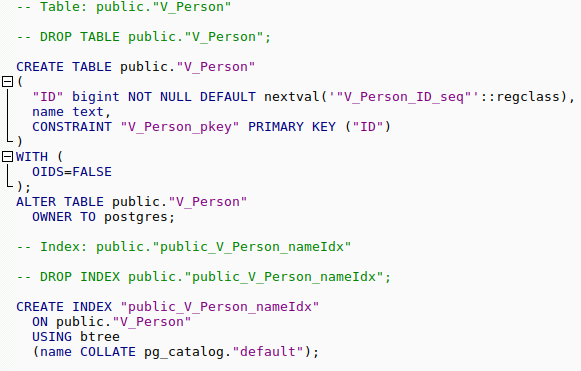
Composite indexes
It is possible to create composite indexes.
@Test
public void testCompositeIndex() {
VertexLabel personVertexLabel = this.sqlgGraph.getTopology().getPublicSchema().ensureVertexLabelExist("Person", new HashMap<String, PropertyType>() {{
put("firstName", PropertyType.STRING);
put("lastName", PropertyType.STRING);
}}); (1)
personVertexLabel.ensureIndexExists(IndexType.NON_UNIQUE, new ArrayList<>(personVertexLabel.getProperties().values())); (2)
this.sqlgGraph.tx().commit();
this.sqlgGraph.addVertex(T.label, "Person", "firstName", "John", "lastName", "Smith");
List<Vertex> johnSmiths = this.sqlgGraph.traversal().V()
.hasLabel("Person")
.has("firstName", "John")
.has("lastName", "Smith")
.toList();
assertEquals(1, johnSmiths.size());
}-
Create the Person VertexLabel with 2 properties, firstName and lastName.
-
Create a composite index on firstName and lastName
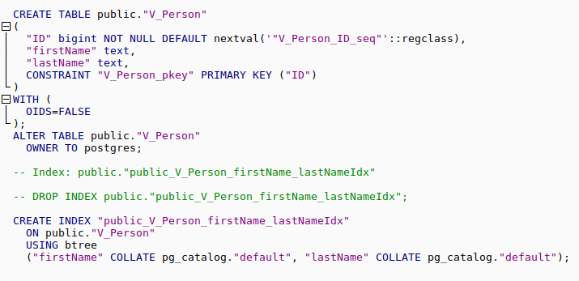
Outside of creating the index Sqlg has no further direct interaction with the index. However gremlin queries with a
HasStep targeting a property with an index on it will translate to a sql where clause on that property and
the underlying RDBMS will utilize the index.
|
Note
|
The index does not need to be created upfront. It can be added any time. |
Global unique indexing
Global unique indexing is a way of specifying that multiple properties across different labels are unique.
For every GlobalUniqueIndex Sqlg maintains a separate table with a unique index defined on it.
Every property that partakes in the GlobalUniqueIndex will have its value duplicated in this table.
These tables are kept in the gui_schema
@Test
public void testPersonAndDogDoNotHaveTheSameName() {
Map<String, PropertyType> properties = new HashMap<String, PropertyType>() {{
put("name", PropertyType.STRING);
}}; (1)
VertexLabel personVertexLabel = this.sqlgGraph.getTopology().getPublicSchema().ensureVertexLabelExist("Person", properties); (2)
VertexLabel dogVertexLabel = this.sqlgGraph.getTopology().getPublicSchema().ensureVertexLabelExist("Dog", properties); (3)
PropertyColumn personName = personVertexLabel.getProperty("name").get(); (4)
PropertyColumn dogName = dogVertexLabel.getProperty("name").get(); (5)
this.sqlgGraph.getTopology().ensureGlobalUniqueIndexExist(new HashSet<PropertyColumn>() {{
add(personName);
add(dogName);
}}); (6)
this.sqlgGraph.tx().commit();
this.sqlgGraph.addVertex(T.label, "Person", "name", "Tyson"); (7)
try {
//This will fail
this.sqlgGraph.addVertex(T.label, "Dog", "name", "Tyson"); (8)
fail("Duplicate key violation suppose to prevent this from executing");
} catch (RuntimeException e) {
//swallow
this.sqlgGraph.tx().rollback();
}
}-
A map of the properties to add.
-
Create the Person VertexLabel with its properties.
-
Create the Dog VertexLabel with its properties.
-
Get the
PropertyColumnfor the name property of Person. -
Get the
PropertyColumnfor the name property of Dog. -
Create the
GlobalUniqueIndexon the name property of Person and Dog. This will ensure that 'Person’s and 'Dog’s do not have the same name. -
Add a Person with the name "Tyson".
-
Try to add a Dog with the name "Tyson". This will fail as the ‘GlobalUniqueIndex’ will prevent 'Person’s and 'Dog’s from having the same name.
GlobalUniqueIndexes do not support composite indexes.
Multiple JVMs
It is possible to run many Sqlg instances pointing to the same underlying database. These instances can be in the same jvm but is primarily intended for separate jvm(s) pointing to the same underlying database.
To make multiple graphs point to the same underlying database it is important to add in the property distributed = true in sqlg.properties.
|
Note
|
Multiple JVMs is only supported for Postgresql. Hsqldb and H2 are primarily intended to run embedded so multiple JVMs do not make sense for them. |
Postgresql’s notify mechanism is used to distribute the cached schema across multiple JVMs.
Sqlg uses Postgresql’s explicit locking to create a global lock to prevent schema creation commands from dead locking the database.
Gremlin
Sqlg has full support for gremlin. However gremlin’s fine grained graphy nature results in very high latency. To overcome the high latency Sqlg optimizes gremlin by reducing the number of calls to the RDBMS.
Sqlg optimizes gremlin by analyzing the steps and where possible combining them into a single SqlgGraphStepCompiled or SqlgVertexStepCompiled.
|
Note
|
This is an ongoing task as gremlin is a large language. |
|
Note
|
Turn sql logging on by setting log4j.logger.org.umlg.sqlg=debug
|
Optimization
Consecutive GraphStep, VertexStep, EdgeVertexStep, EdgeOtherVertexStep, HasStep, RepeatStep OrderGlobalStep, Range and Limit are currently combined. The combined step will then in turn generate the sql statements to retrieve the data. It attempts to retrieve the data in as few distinct sql statements as possible.
@Test
public void showHighLatency() {
Vertex easternUnion = this.sqlgGraph.addVertex(T.label, "Organization", "name", "EasternUnion");
Vertex legal = this.sqlgGraph.addVertex(T.label, "Division", "name", "Legal");
Vertex dispatch = this.sqlgGraph.addVertex(T.label, "Division", "name", "Dispatch");
Vertex newYork = this.sqlgGraph.addVertex(T.label, "Office", "name", "NewYork");
Vertex singapore = this.sqlgGraph.addVertex(T.label, "Office", "name", "Singapore");
easternUnion.addEdge("organization_division", legal);
easternUnion.addEdge("organization_division", dispatch);
legal.addEdge("division_office", newYork);
dispatch.addEdge("division_office", singapore);
this.sqlgGraph.tx().commit();
GraphTraversal<Vertex, Vertex> traversal = this.sqlgGraph.traversal().V()
.hasLabel("Organization")
.out()
.out();
System.out.println(traversal);
traversal.hasNext();
System.out.println(traversal);
List<Vertex> offices = traversal.toList();
assertEquals(2, offices.size());
}Before optimization: [GraphStep(vertex,[]), HasStep([~label.eq(Organization)]), VertexStep(OUT,vertex), VertexStep(OUT,vertex)] After optimization: [SqlgGraphStepCompiled(vertex,[])@[sqlgPathFakeLabel]]
Without optimization the query this.sqlgGraph.traversal().V().hasLabel("Organization").out().out() will result
in a number of database hits. First to get the organizations, then for each organization the divisions and then for each division the offices.
For an embedded db like HSQLDB this is still ok but for a database server like postgresql the performance impact is significant.
In the above example the GraphStep, HasStep and 2 VertexStep are all combined into one SqlgGraphStepCompiled step.
The before optimization output shows the steps that would have executed with if no optimization is performed. As the query only contains sequential optimizable steps they are all combined into one step.
The above example will retrieve the data in one sql query.
SELECT
"public"."V_Office"."ID" AS "alias1",
"public"."V_Office"."name" AS "alias2"
FROM
"public"."V_Organization" INNER JOIN
"public"."E_organization_division" ON "public"."V_Organization"."ID" = "public"."E_organization_division"."public.Organization__O" INNER JOIN
"public"."V_Division" ON "public"."E_organization_division"."public.Division__I" = "public"."V_Division"."ID" INNER JOIN
"public"."E_division_office" ON "public"."V_Division"."ID" = "public"."E_division_office"."public.Division__O" INNER JOIN
"public"."V_Office" ON "public"."E_division_office"."public.Office__I" = "public"."V_Office"."ID"